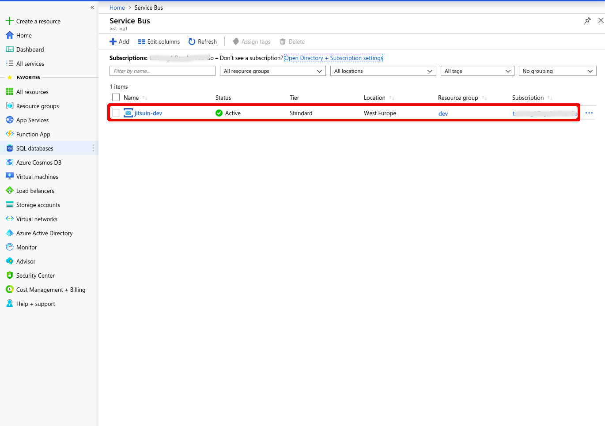
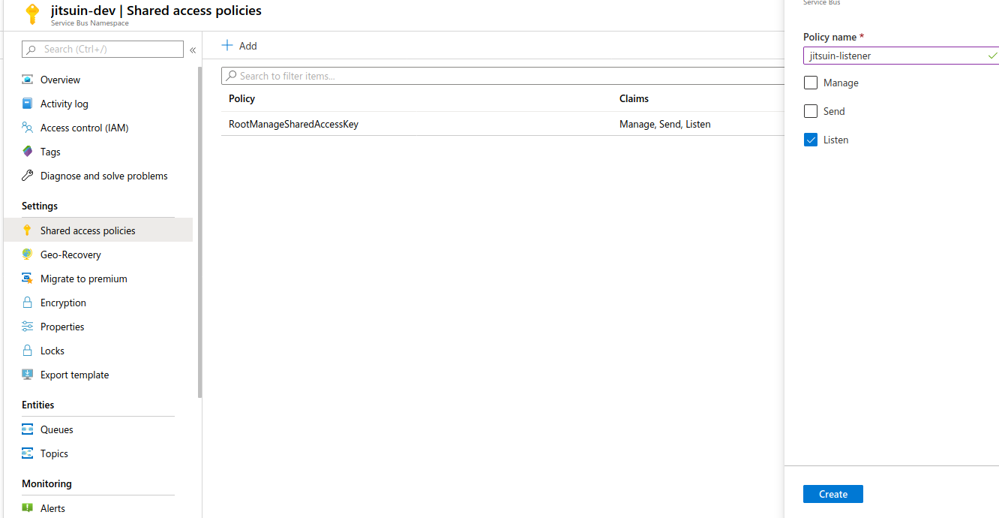
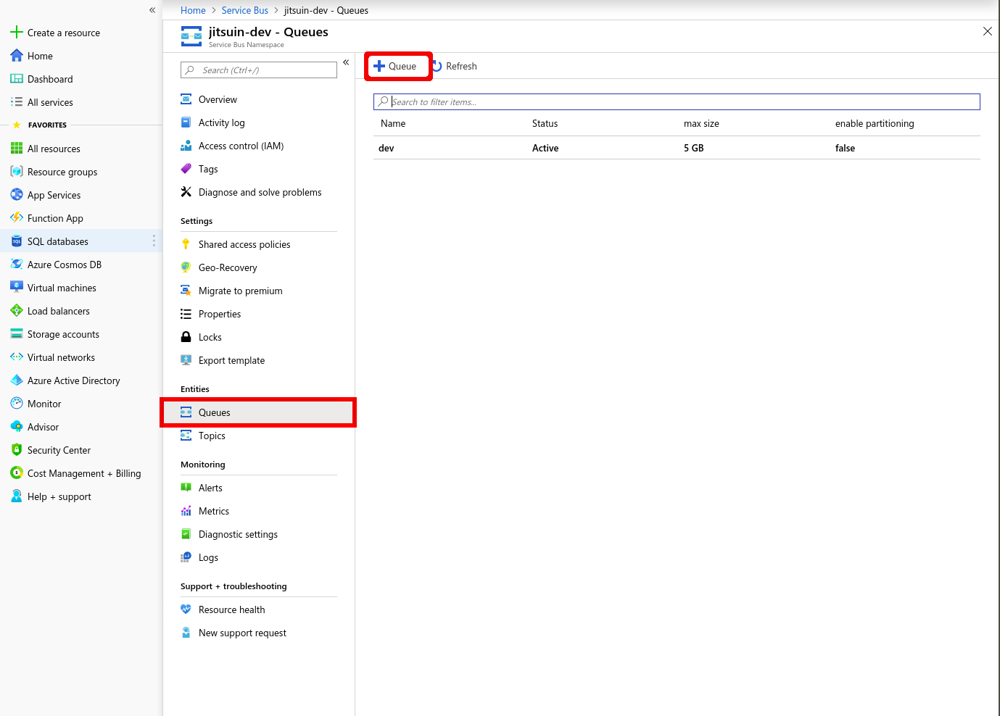
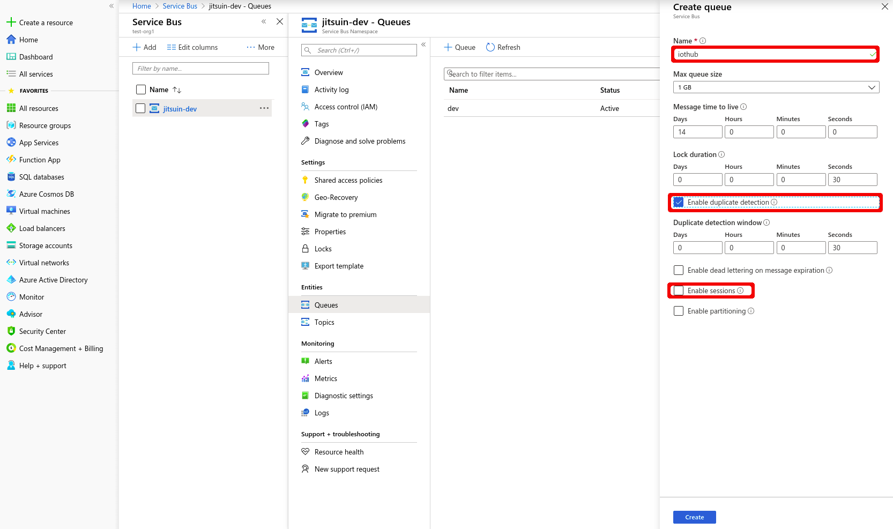
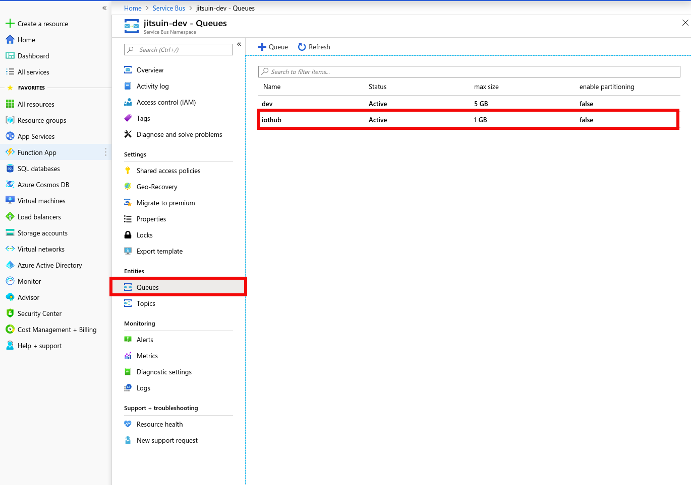
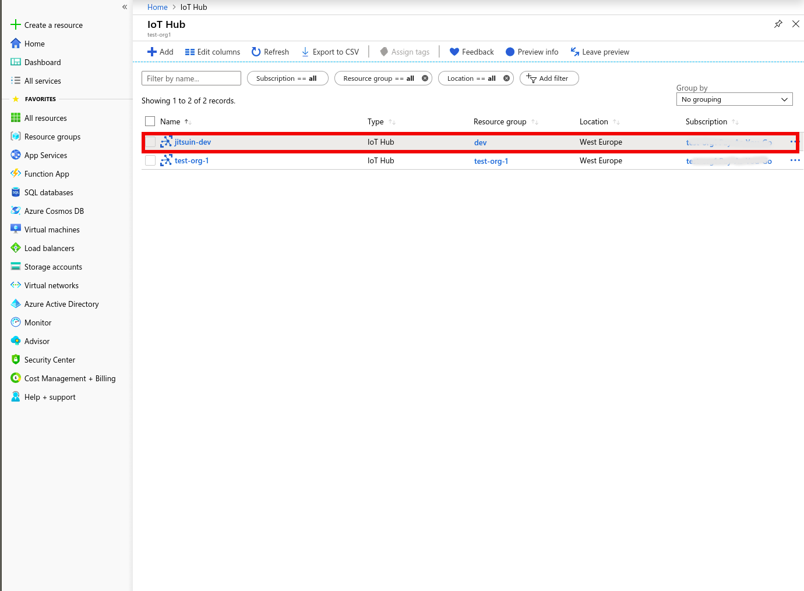
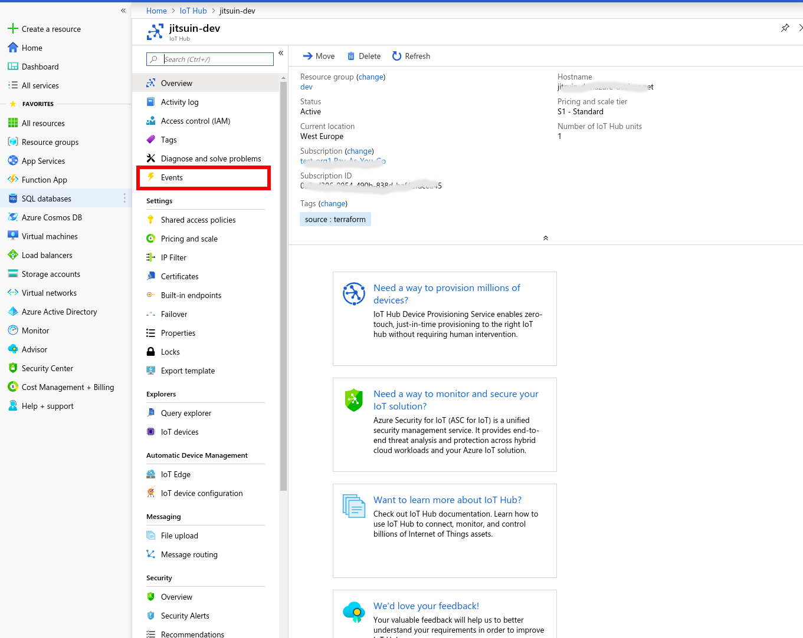
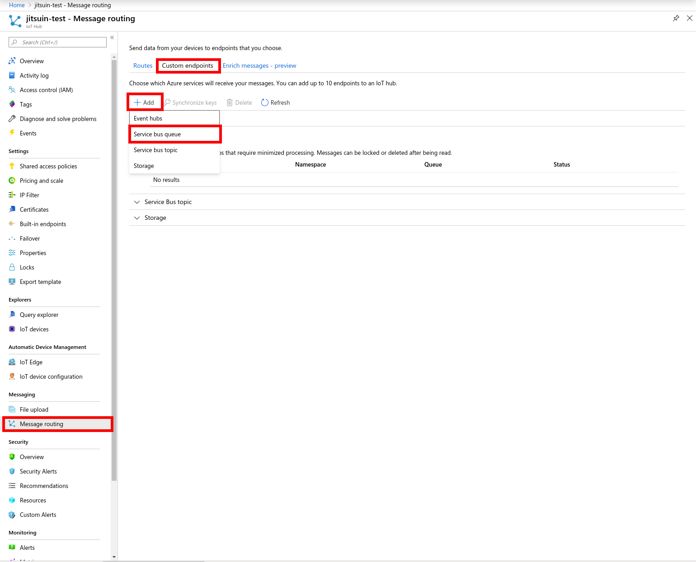
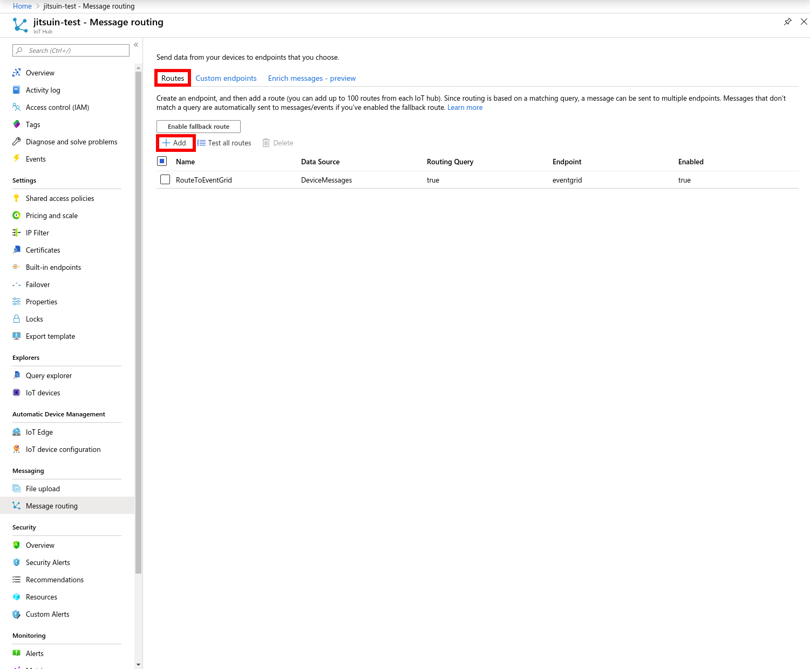

Subscribing To IoTHub events¶
References¶
Overview¶
Currently the Jitsuin Service Bus Subscription service only supports subscribing to a Service Bus Queue endpoint. An Azure Service Bus Queue must be created and connected to an Azure IotHub endpoint using either Azure CLI operations as described in the references or by using portal.azure.com and creating the endpoint interactively.
This document only describes the portal.azure.com method.
Portal.azure.com¶
To start Login to portal.azure.com
Servicebus¶
Search for Servicebus. 
Namespace¶
Choose your namespace (in this case jitsuin-dev).

Set Policy¶
Select +Add, set name to something suitable (in this case jitsuin-listener) and select Listen. Wait. 
List Policies¶
The policy is now listed.

Get Connection String¶
Select the policy (in this case jitsuin-listener) and copy the connection string into the clipboard. Save the connection string somewhere safe. To setup the subscription service in Archivist both the connection string and the queue name are required. A suitable queue name is defined below. Details for this are provided here: SvcBusSources Creation

Queues¶
Select Queues in the sidebar. 
Add Queue¶
Select +Queue. Ensure that the queue is named (in this document: iothub) and duplicate detection is enabled. Sessions is not enabled. Select Create and Wait. 
Show Queues¶
Created queues are shown. To setup the subscription service in Archivist both the connection string and the queue name are required. Details for this are provided here: SvcBusSources Creation

Iothub¶
Search for iothub. Select the correct iothub (in this case jitsuin-dev). 
Select Iothub¶
Select Events from the sidebar. 
Service Bus Queue¶
Select Service Bus Queue at the bottom of the page.

Specify Service Bus Queue¶
Specify a suitable name (in this case jitsuin-listener),
Event Schema is set to Event Grid Schema,
Filter to Event Types is set to select all options - 5 selections in total (see dropdown menu),
Endpoint Type is set to Service Bus Queue.
Select endpoint pops up a sidebar as shown - fill in details as shown (in this case the Service Bus Queue name is set
to jitsuin-listener.
When correct select Confirm Selection for the service bus queue details and Create to save the Event subscription.

Show Event Subscriptions¶
Select Event Subscription tab to confirm that the subscription is created.

Message Routing¶
Select Message Routing tab to setup routing. Select Custom Endpoints and +Add to add a route. Select Service Bus Queue. 
ServiceBus Endpoint¶
Set Endpoint Name to a suitable name (in this case jitsuin-listener-twin).
Set Service Bus Namespace (in this case jitsuin-dev).
Set Service Bus Queue (in this case jitsuin-listener).
Select Create and wait.
The Custom Endpoint should now be displayed.

Select Route¶
Select Routes and +Add to add the route. The Custom Endpoint should now be displayed. 
Set Name to a suitable value (in this case jitsuin-listener-twin).
Set Endpoint to the endpoint name (in this case jitsuin-listener-twin).
Set Data Source to Device TwinChange Events.
Select Save and wait.
The Route will now be displayed.

Enabling subscription in Archivist¶
Follow the instructions in the Application Link section of this document for Service Bus sources SvcBusSources Creation to start feeding Microsoft IoTHub events into the Jitsuin Archivist system. The parameters required to start a subscription are the servicebus connection string and the queuename saved from Get Connection String and Show Queues above.